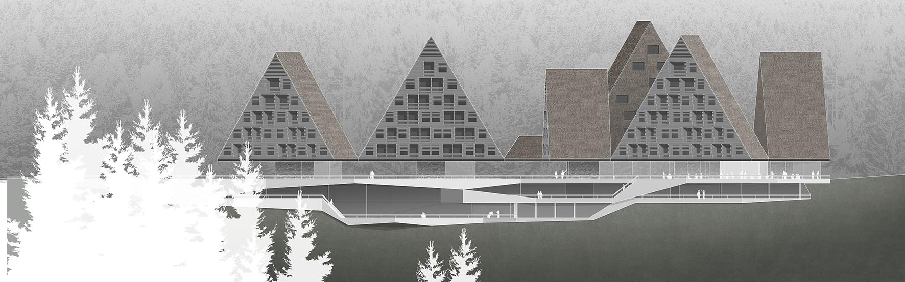
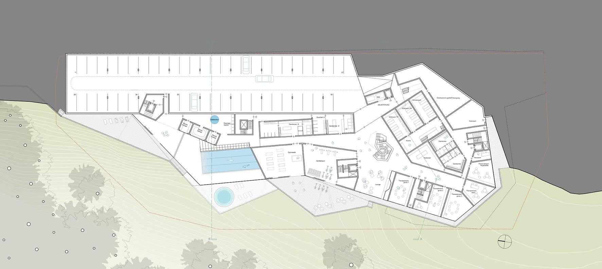
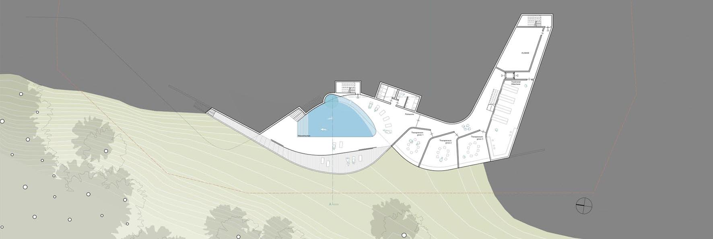
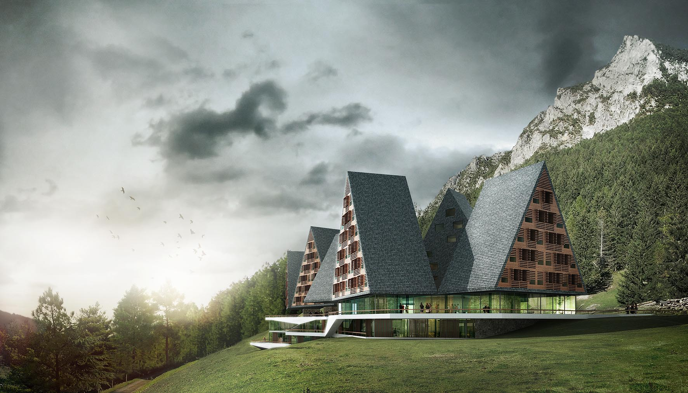
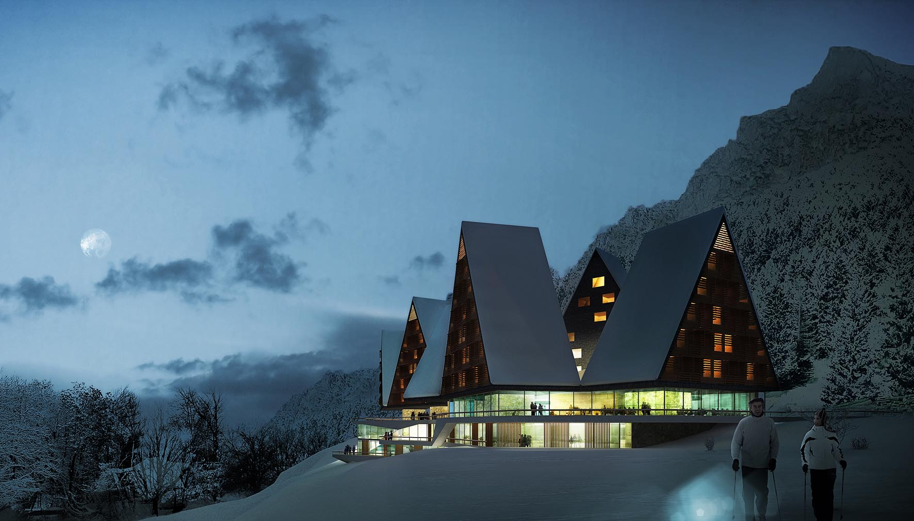
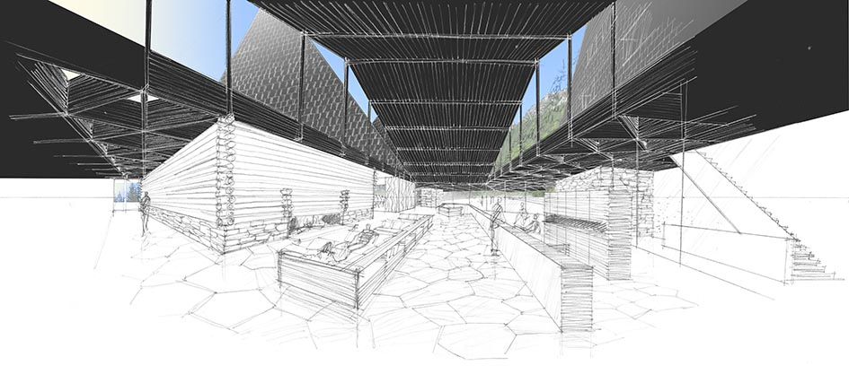
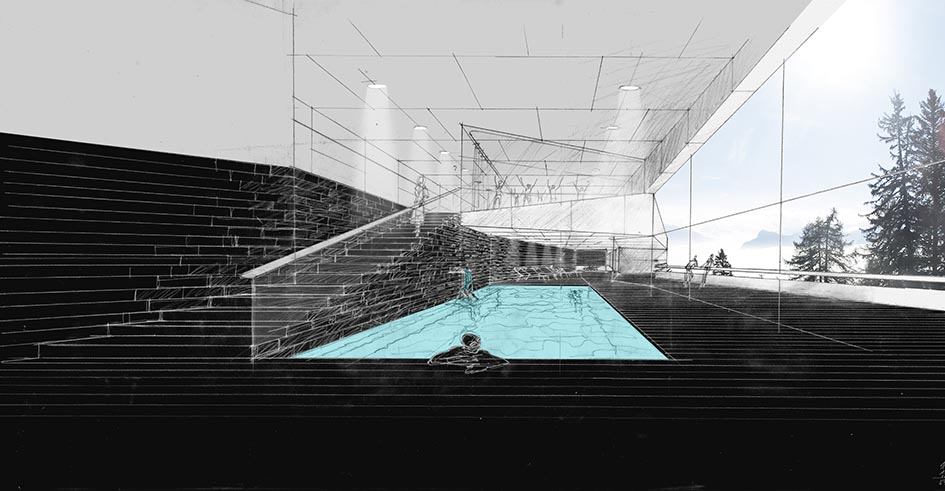

maqueta de situación

plano de situación

alzado oeste

planta de acceso

planta -1

planta -2

sección transversal AA

sección transversal BB

planta 1

planta 1

acceso principal

acceso principal, vista nocturna
En la zona norte del solar, que se estrecha dirección al bosque, se estratifica el proyecto siguiendo la topografía del
terreno en un zócalo de dos plantas sobre el que se sustentan planos masivos constituidos por bloques con cubiertas
a dos aguas de madera, que flotan sobre una primera planta de acceso pública, prácticamente diáfana y transparente.
La planta de acceso se abre hacia el sudeste, donde se encuentra la entrada al hotel y el acceso al parking subterráneo.
El hall con el lobby está coronado por un espacio en doble altura con una cubierta a dos aguas, que se une por las esquinas
a las fachadas de las “casitas” que constituyen las plantas superiores. En la zona norte del solar están alojados la
administración y las viviendas para el personal, y los 3 volúmenes restantes albergan las viviendas para los pacientes.
A las zonas de servicio y ascensores puede accederse directamente a través del vestíbulo que rodea la cocina.
Las habitaciones de los huéspedes están alineadas con vista a la montaña. La administración y viviendas para el personal
están orientadas hacia la pendiente norte, separando asi la zona residencial y administrativa.
En las dos plantas subterráneas se encuentran los espacios servidores, técnicos y de logística del hotel (tales como
cocina, cuarto de basuras, lavandería…), en la zona trasera; y las zonas de Spa, fitness y terapia se abren hacia la
montaña en amplias terrazas.
A esta zona se accede a través de una escalera desde el vestíbulo o directamente desde las habitaciones utilizando el
ascensor. En el área del SPA y la zona de terapia y fitness se abren unas plataformas poligonales a la montaña que proporcionan
unas maravillosas vistas, y su relación con el medio ambiente le garantiza la privacidad necesaria.
CONSTRUCCIÓN
El proyecto está constituido por hormigón armado convencional en las dos primeras plantas del zócalo, que se deslizan
a través de la pendiente siguiendo la topografía del terreno. Esta medida afecta positivamente, además de a la integración
deseada del edificio en el paisaje, a la excavación y movimiento de tierras y por lo tanto también a los costes y plazos
de construcción.
La construcción masiva continua en los muros de contención de la planta baja y en los núcleos de ascensores y escaleras.
Los forjados de las plantas superiores se cuelgan de estos núcleos de comunicación.
MATERIALIDAD
Además de la topografía, se tienen en cuenta los materiales para conseguir la deseada integración en el entorno. Para ello se emplean suelos de madera y terrazas de piedra, los materiales vernáculos de la zona, empleándolos de acuerdo a una nueva manera de construir.

vista del lobby

vista del spa

vista de las habitaciones